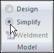
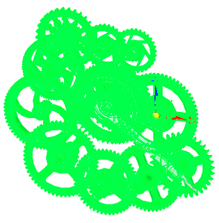
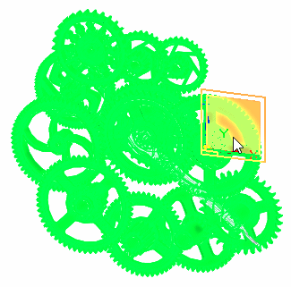
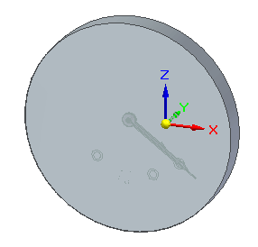
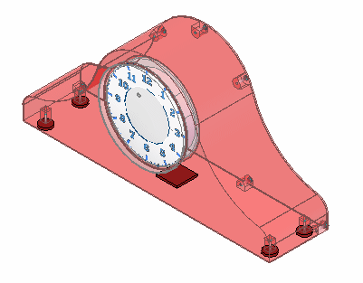

Activity: Creating a simplified assembly
The objective of this activity is to show how a large assembly can be simplified.
In this activity you will create a simplified assembly.
The clock assembly has many internal parts that do not need to be represented in a higher level assembly.
Open the assembly gears.asm in the folder where the activity files are located.
Choose Tools tab→Model group→Simplify command.

Choose Tools tab→Simplify group→Model command .
The Model command creates ordered features within the assembly to enclose the parts to be simplified. A box or a cylinder can be used to define the envelope for the simplified assembly geometry. Once created, the enclosure can be refined with other ordered modeling features such as cutouts, rounds, draft and more.
Choose Home tab→Simplify group→Enclosure command .
Set the enclosure shape to Outside Cylinder.
In the graphic window, select all the gears as shown.
Make sure you select only the gears. Do not select the other parts in second.asm, minute.asm, and hour.asm.

Click Accept.
Select the reference plane shown

Click Finish.
The cylindrical geometry representing the simplified assembly is created.

Click Close and Return to return to the assembly.
Save the assembly.
Choose Tools tab→Model group→Design command to show the assembly in the designed state.
Notice a simplified assembly entry now exists in PathFinder for this assembly. It can be deleted if necessary.
Close the assembly file.
Open clock.asm .
In PathFinder, right-click gears.asm and choose Simplified/Adjustable→Use Simplified Assembly.
The simplified representation is shown.

Save and then close the assembly. This completes this activity.
In this activity you learned how to simplify an assembly. The simplified version can be used in a higher level large assembly, and is more efficient because the interior details do not have to be shown.
-
Click the Close button in the upper-right corner of the activity window.
Answer the following questions:
-
What is a simplified assembly?
-
Why is a simplified assembly desirable?
-
Can a simplified assembly be saved as a Solid Edge Part Document? Why is this desirable?
-
Generally, what type of assembly is better suited as a candidate for simplification?
-
What is a simplified assembly?
A simplified assembly shows only the exterior envelope of faces and excludes parts, such as small parts, which reduces the total number surfaces that make up the assembly. The simplified assembly representation is associative to the components in the assembly.
-
Why is a simplified assembly desirable?
When you place a simplified assembly document as a subassembly into another assembly, the memory requirements required to display the higher level assembly drop dramatically. This improves performance and also allows you to work with larger data sets more effectively.
-
Can a simplified assembly be saved as a Solid Edge Part Document? Why is this desirable?
Yes the simplified assembly can be saved as a Solid Edge Part Document.
This can be useful when another company uses your assembly as a part in their assemblies. This reduces the data-management and transfer requirements to a single document, and it can also protect any proprietary information that a complete assembly might reveal.
-
Generally, what type of assembly is better suited as a candidate for simplification?
Assemblies that are enclosures with many internal parts are generally good candidates for simplification.